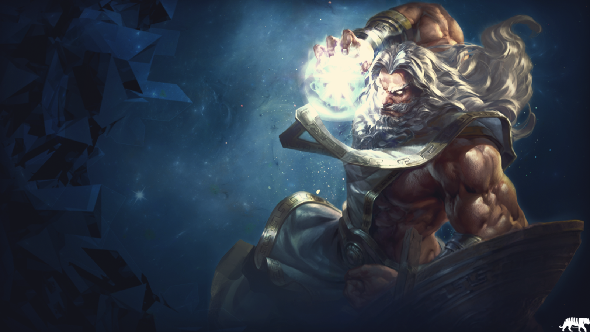
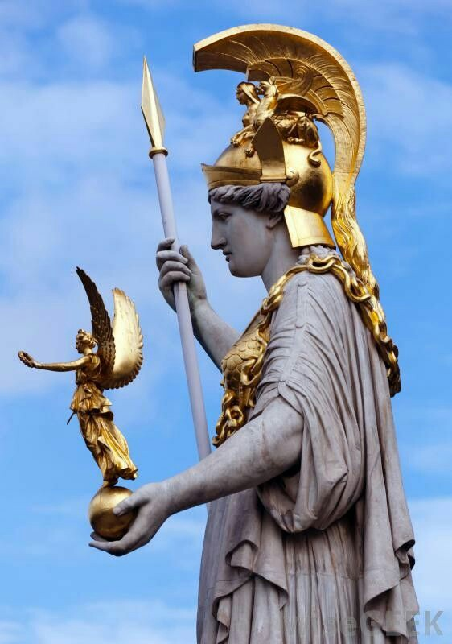
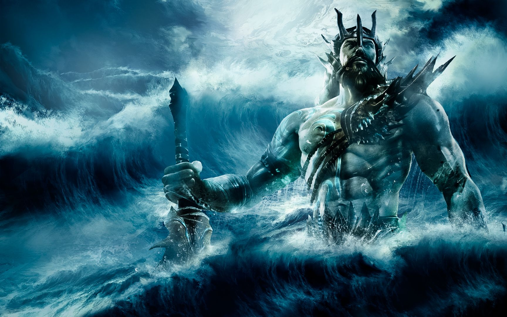
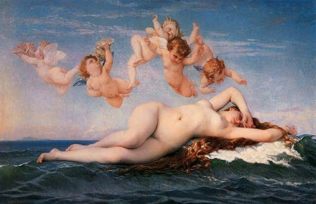
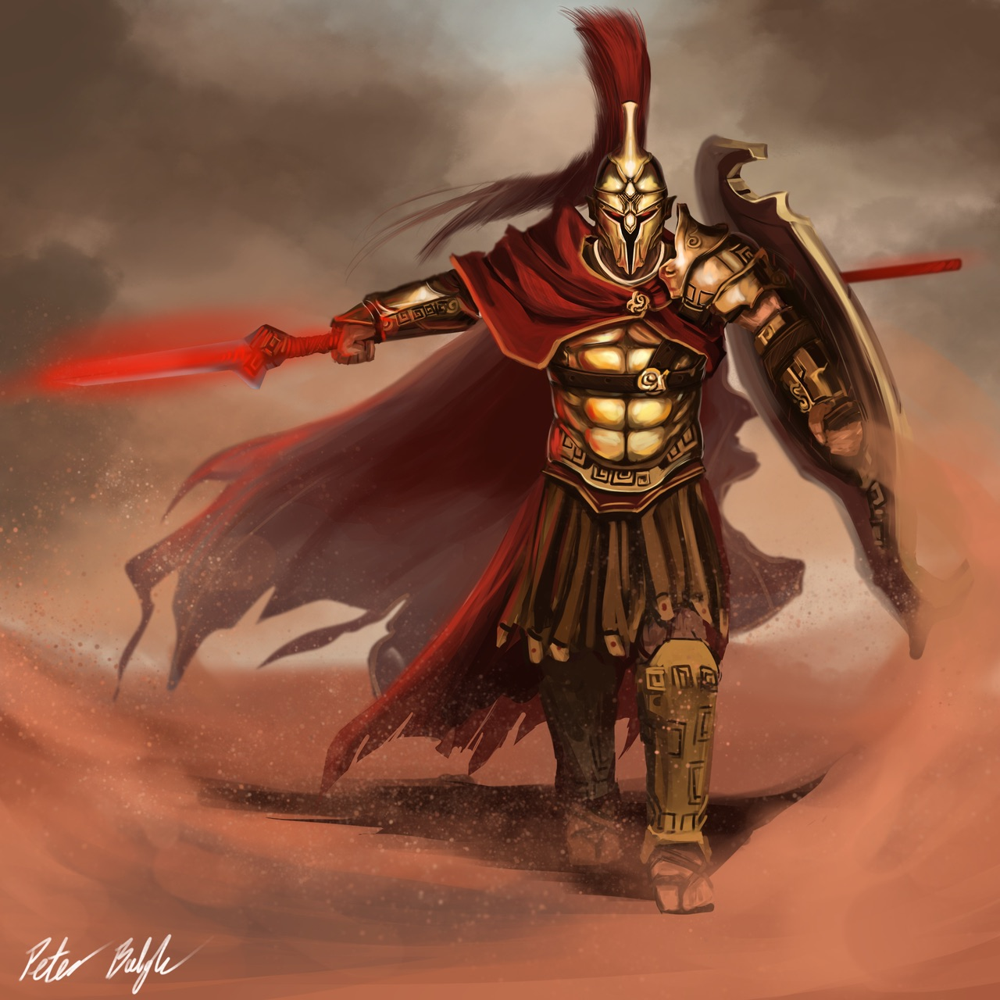

Zeus deus dos trovões, senhor do Olimpo, era filho de Cronos e Réia. Cronos tinha o hábito de devorar seus próprios filhos para que não tomassem seu lugar no trono. Até que Zeus nasceu e sua mãe Réia já cansada de tanto sangue e sofrimento deu a Cronos uma pedra embrulhada no lugar de Zeus, salvando sua vida. Réia decidiu que Zeus seria o ultimo filho e encerraria o reinado de sangue e sofrimento e tomaria o trono do pai. Assim que Cronos descobriu que tinha engolido uma pedra ao invés do filho saiu a procura de Zeus, mas não o encontrou. Zeus foi criado no bosque de Creta e foi alimentado com mel e leite de cabra. E assim quando cresceu foi a caminho do pai para combatê-lo, eles viraram grandes inimigos, Zeus obrigou seu pai a engolir uma bebida mágica, que restituiu todos os filhos que no passado tinha devorado. Foi então que Zeus conheceu seus quatro irmãos: Deméter, Poseidon, Héstia e Hades, faltou apenas a Hera que como Zeus foi poupada e não estava ali. Zeus ainda liberou ciclopes que deu a ele o Raio. Então após dez anos, que foi o tempo que durou a guerra, Zeus subiu ao Olimpo junto com seus irmãos Poseidon e Hades que o ajudaram a destruir Cronos, e então comandaram o Céu, a Terra e os demais deuses.

Atenas
Atena era a deusa grega da sabedoria e das artes. Os romanos a chamavam de Minerva. Foi concebida da união de Zeus e da deusa Métis. Era uma deusa virgem, linda guerreira protetora de seus heróis escolhidos e também de sua cidade Atenas. Atena era a filha predileta de Zeus, porém quando Métis ficou grávida, Zeus engoliu a esposa com medo de sua filha nascer mais poderosa que ele e lhe tirar o trono, mas para que isso acontecesse convenceu Métis a participar de uma brincadeira divina, onde cada um se transformava em um animal diferente e Métis pouco prudente acabou se transformando em uma mosca, e Zeus a engoliu. Métis foi para a cabeça de Zeus. Mas com o passar dos anos, Zeus sentiu uma forte dor de cabeça e pediu para que Hefesto lhe desse uma machadada, foi então que Atena já adulta saltou de dentro do cérebro de seu pai, já com armadura, elmo e escudo.

Poseidon
Poseidon, também conhecido como Netuno para os romanos, era o grande rei dos mares, um homem muito forte, com barbas e sempre representado com seu tridente na mão e as vezes com um golfinho. Era filho de Cronos, deus do tempo, e da deusa da fertilidade Réia. Sua casa era no fundo do mar e com seu tridente causava maremotos, tremores, além de fazer brotar água do solo. Poseidon era casado com Anfitrite. Quando se conheceram Poseidon se apaixonou por ela, mas Anfitrite o recusou e Poseidon a obrigou casar-se com ele, porém, ela para não casar, se escondeu nas profundezas do oceano, só sua mãe sabia onde ela estava. Mas com o tempo Anfitrite mudou de idéia e foi atrás de Poseidon com quem se casou e ficou sendo a rainha do oceano. Com ela teve um filho chamado Tritão que aterrorizava os marinheiros com um barulho espantoso que ele fazia quando soprava o búzio, um instrumento, mas também com ele fazia sons maravilhosos. Entretanto, na sua vida Poseidon teve muitos outros amores e fora de seu casamento teve mais filhos que ficaram muito conhecidos por sua crueldade, os dois que mais conhecidos foram o Ciclope e o gigante Orion. Poseidon disputou com Atena, a deusa da sabedoria, para ser a deidade da cidade hoje conhecida como Atenas, porém Atena ganhou a competição e a cidade ficou conhecida com o seu nome.

Vênus
Há algumas controvérsias quanto ao mito de Vênus, pois numa das versões, ela seria filha de Júpiter, deus dos céus, e Dione, deusa das ninfas. Noutra versão da lenda, Vênus nasceu da espuma do mar e dentro de uma concha. Como era muito invejada por sua beleza, algumas deusas estavam insatisfeitas com as reações que ela causava nos homens.
Foi assim que Diana, deusa da caça, Minerva, deusa da razão, e Vesta, deusa do lar, pediram ao pai de Vênus, Júpiter, que lhe fosse concedido um casamento.
Certo de que o problema seria resolvido, Júpiter ordenou que ela se casasse com Vulcano, o deus romano do fogo. No entanto, ele era feio e sofria de uma deficiência que o deixou coxo (manco).
Mesmo que a escolha não tenha agradado a deusa, Vênus casou-se com ele, entretanto, manteve relações extraconjugais com outros deuses e mortais.
Uma das mais conhecidas é o relacionamento que ela teve com Marte, o deus da guerra. Com ele, teve alguns filhos, do qual merece destaque Cupido, o deus do amor.

Marte
Marte era o deus romano, filho de Júpiter e Juno, equivalente a Ares na mitologia grega. Em contraste com sua irmã Minerva, que representava a guerra justa e diplomática, ele era o deus da guerra sangrenta, por isso tinha como características, a agressividade e a violência.
Devido a sua rixa com Minerva, os dois irmãos acabaram se opondo na Guerra de Tróia. Enquanto Minerva protegia os gregos, Marte ajudava os troianos, que posteriormente perderam a guerra para os gregos e Minerva. Mesmo sendo cruel e rude, Marte se apaixonou por Vênus, a deusa do amor. A deusa manteve relações extraconjugais com ele, pois já era casada com Vulcano. Do amor entre Marte e Vênus, nasceu Cupido. Outro fato importante é que os moradores de Roma se consideram mitologicamente descendentes de Marte, pois Rômulo era filho de Ília, princesa de Alba Longa, e Marte.

Hades
Hades é o deus grego do submundo, do reino dos mortos, e na mitologia romana, ele é chamado de Plutão.
Também é chamado de deus da riqueza porque possui todos os metais preciosos do planeta.
Reside e governa o lugar mais sombrio da Terra, para onde vão as almas dos mortos.
Dono de uma personalidade impiedosa, Hades era repugnante, insensível, monstruoso e poucos tinham coragem de pronunciar seu nome. Assim, na mitologia grega ele é considerado o mais temido dos deuses. Hades é retratado como um homem de pele morena e que usa barba. É adornado com uma coroa, e carrega a chave do submundo e um cetro.
Em sua companhia anda um cão de três cabeças, o cérbero. Esse animal tinha o objetivo de guardar a entrada do reino dos mortos.
Geralmente, Hades usava uma carruagem para se locomover e, muitas vezes, ele é retratado na carruagem em companhia de sua esposa Perséfone.